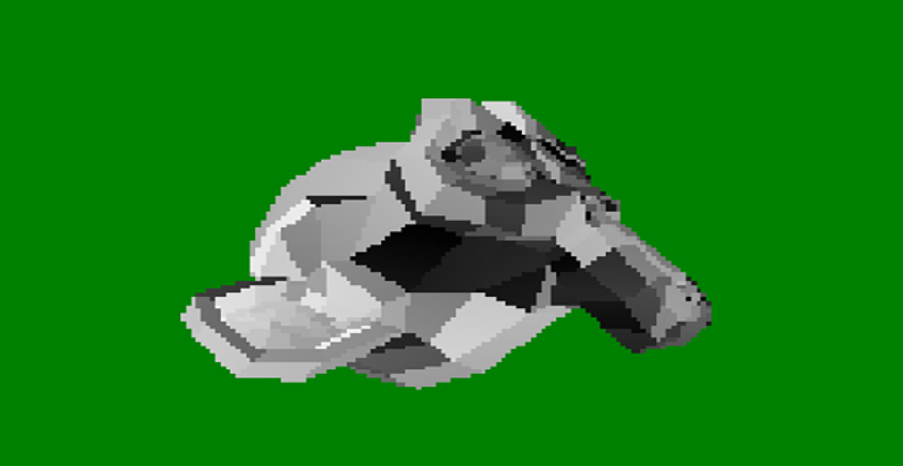
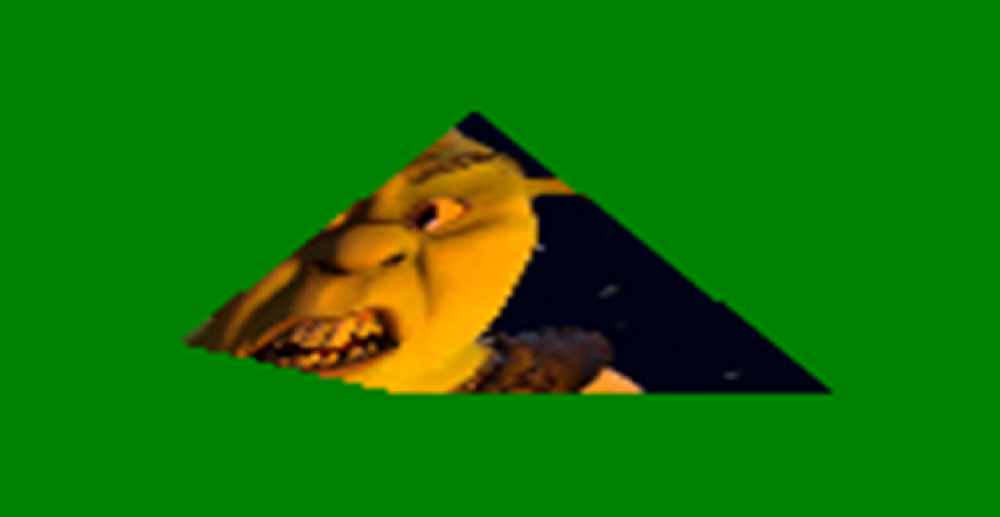

Loads obj files with help of SharpGL and returns contructed VAOs. As for now it ignores the hierarchy of the file and returns only the constructed VAOs in array. Constructed Vertices have Position, Normals and UV coordinates. It doesn't support materials of the object and other stuff. It does however triangulate the object so that rasterizer can work with it.
Loads image files with help of ImageSharp and returns contructed TextureBuffers. It also caches the loaded textures so if you want your own texture, either use "_New" method, or use Copy on the TextureBuffer.
